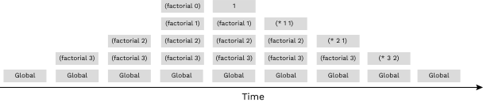

Discussion 10: Tail Calls, Scheme Data Abstraction
Tail Calls
When writing a recursive procedure, it's possible to write it in a tail recursive way, where all of the recursive calls are tail calls. A tail call occurs when a function calls another function as the last action of the current frame.
Consider this implementation of factorial that is not tail recursive:
(define (factorial n)
(if (= n 0)
1
(* n (factorial (- n 1)))))The recursive call occurs in the last line, but it is not the last expression
evaluated. After calling (factorial (- n 1)), the function still needs to
multiply that result with n. The final expression that is evaluated is
a call to the multiplication function, not factorial itself. Therefore,
the recursive call is not a tail call.
Here's a visualization of the recursive process for computing (factorial 6) :
(factorial 6)
(* 6 (factorial 5))
(* 6 (* 5 (factorial 4)))
(* 6 (* 5 (* 4 (factorial 3))))
(* 6 (* 5 (* 4 (* 3 (factorial 2)))))
(* 6 (* 5 (* 4 (* 3 (* 2 (factorial 1))))))
(* 6 (* 5 (* 4 (* 3 (* 2 1)))))
(* 6 (* 5 (* 4 (* 3 2))))
(* 6 (* 5 (* 4 6)))
(* 6 (* 5 24))
(* 6 120)
720The interpreter first must reach the base case and only then can it begin to calculate the products in each of the earlier frames.
We can rewrite this function using a helper function that remembers the temporary product that we have calculated so far in each recursive step.
(define (factorial n)
(define (fact-tail n result)
(if (= n 0)
result
(fact-tail (- n 1) (* n result))))
(fact-tail n 1))fact-tail makes a single recursive call to fact-tail, and
that recursive call is the last expression to be evaluated, so it is a tail
call. Therefore, fact-tail is a tail recursive process.
Here's a visualization of the tail recursive process for computing (factorial 6):
(factorial 6)
(fact-tail 6 1)
(fact-tail 5 6)
(fact-tail 4 30)
(fact-tail 3 120)
(fact-tail 2 360)
(fact-tail 1 720)
(fact-tail 0 720)
720The interpreter needed less steps to come up with the result, and it didn't need to re-visit the earlier frames to come up with the final product.
In this example, we've utilized a common strategy in implementing tail-recursive procedures which is to pass the result that we're building (e.g. a list, count, sum, product, etc.) as a argument to our procedure that gets changed across recursive calls. By doing this, we do not have to do any computation to build up the result after the recursive call in the current frame, instead any computation is done before the recursive call and the result is passed to the next frame to be modified further. Often, we do not have a parameter in our procedure that can store this result, but in these cases we can define a helper procedure with an extra parameter(s) and recurse on the helper. This is what we did in the factorial procedure above, with fact-tail having the extra parameter result.
Tail Call Optimization
When a recursive procedure is not written in a tail recursive way, the interpreter must have enough memory to store all of the previous recursive calls.
For example, a call to the (factorial 3) in the non tail-recursive version
must keep the frames for all the numbers from 3 down to the base case,
until it's finally able to calculate the intermediate products and forget those frames:

For non tail-recursive procedures, the number of active frames grows proportionally to the number
of recursive calls. That may be fine for small inputs, but imagine calling factorial
on a large number like 10000. The interpreter would need enough memory for all 1000 calls!
Fortunately, proper Scheme interpreters implement tail-call optimization as a requirement of the language specification. TCO ensures that tail recursive procedures can execute with a constant number of active frames, so programmers can call them on large inputs without fear of exceeding the available memory.
When the tail recursive factorial is run in an interpreter with tail-call optimization,
the interpreter knows that it does not need to keep the previous frames around,
so it never needs to store the whole stack of frames in memory:
Tail-call optimization can be implemented in a few ways:
- Instead of creating a new frame, the interpreter can just update
the values of the relevant variables in the current frame (like
nandresultfor thefact-tailprocedure). It reuses the same frame for the entire calculation, constantly changing the bindings to match the next set of parameters. - How our 61A Scheme interpreter works: The interpreter builds a new frame as usual, but then replaces the current frame with the new one. The old frame is still around, but the interpreter no longer has any way to get to it. When that happens, the Python interpreter does something clever: it recycles the old frame so that the next time a new frame is needed, the system simply allocates it out of recycled space. The technical term is that the old frame becomes "garbage", which the system "garbage collects" behind the programmer's back.
Tail Context
When trying to identify whether a given function call within the body of a function is a tail call, we look for whether the call expression is in tail context.
Given that each of the following expressions is the last expression in the body of the function, the following expressions are tail contexts:
- the second or third operand in an
ifexpression - any of the non-predicate sub-expressions in a
condexpression (i.e. the second expression of each clause) - the last operand in an
andor anorexpression - the last operand in a
beginexpression's body - the last operand in a
letexpression's body
For example, in the expression (begin (+ 2 3) (- 2 3) (* 2 3)),
(* 2 3) is a tail call because it is the last operand expression to be
evaluated.
Q1: Fast-Exp
We can write a faster version of exp , which is a function that raises a number b to the n-th power, that computes its answer much faster
using the method of repeated squaring:
(define (square x) (* x x))
(define (fast-exp-recursive b n)
(cond ((= n 0)
1)
((even? n)
(square (fast-exp-recursive b (/ n 2))))
(else
(* b (fast-exp-recursive b (- n 1))))))The previous exp procedure took a linear number of recursive calls,
because it always reduced n by 1. However, fast-exp halves the
value of n every two recursive calls at most, and so it takes a
logarithmic number of recursive calls.
However, this new procedure is not tail recursive, and as a result can use up a lot of memory. In particular, the following will crash the Scheme interpreter after a few seconds of computation:
(fast-exp-recursive 1 (- (fast-exp-recursive 2 20000) 1))Bonus question: Why did we subtract 1? In other words, why doesn't the following crash the interpreter?
(fast-exp-recursive 1 (fast-exp-recursive 2 20000))Back to the original question - write fast-exp using tail recursion
so that this no longer crashes.
Q2: Reverse
Write a tail-recursive function reverse that takes in a Scheme list a
returns a reversed copy. Hint: use a helper function!
scm> (reverse '(1 2 3))
(3 2 1)
scm> (reverse '(0 9 1 2))
(2 1 9 0)Scheme Data Abstraction
Data abstraction is a powerful concept in computer science that allows programmers to treat code as objects. For example, using code to represent cars, chairs, people, and so on. That way, programmers don't have to worry about how code is implemented; they just have to know what it does.
Data abstraction mimics how we think about the world. If you want to drive a car, you don't need to know how the engine was built or what kind of material the tires are made of to do so. You just have to know how to use the car for driving itself, such as how to turn the wheel or press the gas pedal.
A data abstraction consists of two types of functions:
- Constructors: functions that build the abstract data type.
- Selectors: functions that retrieve information from the data type.
Programmers design data abstractions to abstract away how information is stored and calculated such that the end user does not need to know how constructors and selectors are implemented. The nature of abstraction allows whoever uses them to assume that the functions have been written correctly and work as described. Using this idea, developers are able to use a variety of powerful libraries for tasks such as data processing, security, visualization, and more without needing to write the code themselves!
In Python, you primarily worked with data abstractions using Object Oriented Programming, which used
Python Objects to store the data. Notably, this is not possible in Scheme, which is a functional
programming language. Instead, we create and return new structures which represent the current state of the data.
Say we have an abstract data type for cities. A city has a name, a latitude coordinate, and a longitude coordinate.
Our data abstraction has one constructor:
(make-city name lat lon): Creates a city object with the given name, latitude, and longitude.
We also have the following selectors in order to get the information for each city:
(get-name city): Returns the city's name(get-lat city): Returns the city's latitude(get-lon city): Returns the city's longitude
Here is how we would use the constructor and selectors to create cities and extract their information:
scm> (define berkeley (make-city 'Berkeley 122 37))
berkeley
scm> (get-name berkeley)
Berkeley
scm> (get-lat berkeley)
122
scm> (define new-york (make-city 'NYC 74 40))
new-york
scm> (get-lon new-york)
40The point of data abstraction is that we do not need to know how an abstract data type is implemented, but rather just how we can interact with and use the data type.
Q3: Distance
We will now implement the function distance, which computes the
Euclidean distance between two city objects; the Euclidean distance between two
coordinate pairs (x1, y1) and (x2, y2) can be found by calculating
the sqrt((x1 - x2) ** 2 + (y1 - y2) ** 2). Use the latitude and longitude of a city as
its coordinates; you'll need to use the selectors to access this info!
Run in 61A CodeYou may find the following methods useful:
(expt base exp): calculatebase ** exp(sqrt x)calculatesqrt(x)
Q4: Closer City
Next, implement closer-city, a function that takes a latitude,
longitude, and two cities, and returns the name of the city that is
relatively closer to the provided latitude and longitude.
You may only use the selectors and constructors introduced above and the
distance function you just defined for this question.
Run in 61A CodeHint: How can you use your
distancefunction to find the distance between the given location and each of the given cities?
Submit Attendance
You're done! Excellent work this week. Please be sure to ask your section TA for the attendance form link and fill it out for credit. (one submission per person per section).